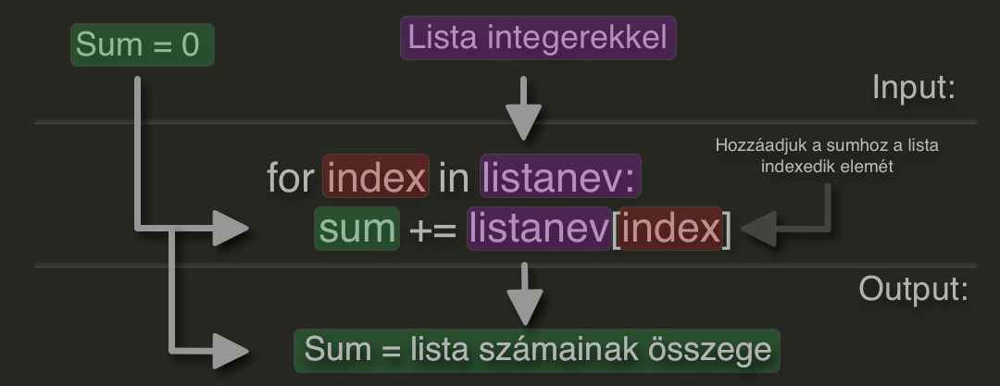

Python haladó
Üdv újra!
Ez itt a haladó python rész ahol összegfoglaltuk, hogy mit vettünk a második félévünkben programozás tantárgyból. Ezen az oldalon megtalálhatod és megtanulhatod a programozási tételeket, függvényeket, a paraméteres és nem paraméteres eljárásokat, illetve a dátum és idő használatát/kezelését pythonban. Reméljük, hogy tudtunk segíteni neked. A szöveg mellett lévő blokkban könnyen ki is tudod próbálni ezeket a példákat! Használatához javascript engedélyezése szükséges!
Jó tudni! Ha ezt az oldalt gépen nyitod meg, ki is tudod próbálni a kódjaid az oldalba épített terminálban.
6.1 Eljárások
Láthatóbbá tudod tenni a kódodat illetve, könnyebben kezelhetővé az eljárások használatával. Az eljárásokat és a függvényeket általában külön fájlban tároljuk, mint a példában is mutatott helloworld.py és udvozol.py. Ezeket természetesen egy fájlba is tárolhatjuk viszont ameddig nem írunk óriási kódokat, addig nem feltétlenül kell ezeket használni.
Amikor egy eljárást szeretnénk csinálni el kell döntenünk hogy szeretnénk paramétereket kérni és ha igen, milyen paramétert kérjünk, be. Például ha csak egy integert szeretnénk a függvényünk neve után így tudjuk jelezni a gépnek, hogy csak integert fogad el: def szam() -> int:
Amennyiben kódunkban nem printelni fogunk hanem például egy új változót csinálni akkor a függvény definiálása után return változó_neve kódsort alkalmazzuk.
Paraméter nélküli eljárás:
#helloworld.py
def helloworld():
print('Hello world!')
#main.py
helloworld()
#Eredmény: 'Hello world!'
Paraméteres eljárás:
#udvozol.py
def udvozol(nev):
print('A nevem '+ nev +', és a tiéd?')
# VAGY
def udvozol(nev):
print(f'A nevem {nev} és a tiéd?')
#main.py
udvozol('Ádám')
#Eredmény: 'Szia Ádám, légy üdvözölve!'
6.2 Függvények
A függvény meghatározása nagyon egyszerű: ez egy kis kódrészlet, ami valami specifikus feladatot lát el.
A függvény az utasítások olyan blokkja, ami végrehajtja a benne meghatározott művelet(ek)et, és miután lefutott, tetszőlegesen újra hívható, futtatható.
A függvények modulárisabbá, áttekinthetőbbé teszik a kódot, lehetővé téve ugyanazon kódrészlet (függvény) újra és újra használatát.
# Függvény definíciója
def festek_kalkulator(x, y):
t = x * y
l = t * 0.13
return l
# Függvény hívása
liter = festek_kalkulator(5, 2)
# A függvény lehet egy kifejezés része is
ar = festek_kalkulator(5, 2) * 700
6.3 Beépített függvények
A Python számos beépített függvénnyel rendelkezik, ezeket a Python telepítésével azonnal tudjuk használni.
Az alábbi listában található az összes általunk ismert és használt beépített függvény
Tudtad? Összesen 67 beépített nem speciális függvény van a Pythonban?
sum(lista)- Visszaadja a lista számainak összegét.range(x, y)- Egy intervallumot tudunk megadni ezzel. Főképpforciklusban használjuklist(xyz)- Létrehoz egy új listát, melyben ugyan azok az elemek vannak mint az 'xyz' listábaninput('Szöveg:')- Kiírja a "Szöveg:"-et és utána be tudunk írni bármit. Hogy pontos adatot kapjunk a felhasználótól ezt a függvényt átalakíthatjuk a kijelölt adattípusunkra.int(x)- Egy számot sima egész számmáinteger-ré konvertál. Amennyiben nem számot kap, hanem mást (például szöveget) akkor hibát írfloat(x)- Egy számot lebegõpontos (tört) számmá konvertálja.round(x, y)- x lebegõpontos értékét a tizedes pont után y számjegyre kerekítve adja vissza.str(szoveg)- Egy adattípust, szöveges adattípussá alakít át.len(xyz)- Egy lista elemeinek számát adja vissza, vagy akár egy szövegnek a karaktereinek a számát. (len = lenght)xyz.append()- Xyz listához tudunk vele új elemet hozzáfűzni.xyz.count()- Megmondja, hogy a zárójelben szereplő elem hányszor fordul elő a listában.xyz.index()- Visszaadja a zárójelben megadott elem első előfordulásának indexét a listában.lower()- A stringet kisbetűssé alakítja. Ha eddig is kisbetűs volt, nos, annyi baj legyen!upper()- A karakterlánc NAGYBETŰS változatát adja vissza.remove()- A zárójelben megadott elemet kiveszi az adott listából.
Segítség Python dokumentáció
Feladat!
Csinálj a tapasztalataid alapján egy születési idő kalkulátort!
xyz = [110, 100, 90]
x = 100
y = 110
z = 90
szoveg = 'Szép az időnk!'
sum(lista)
# output: 200
for x in range(1, 10)
print(x)
# output: 10-szer fut le a for ciklus
lista_masolata = list(lista)
# output: A lista másolata
kor = input('Hány éves vagy?')
# output: Hány éves vagy: (és ide tudsz bármit írni)
# ahhoz hogy ne egy téves értéket
# kapjunk az előző részhez,
# az inputot ebbe a függénybe írunk
kor = int(input('Hány éves vagy?'))
# output: Hány éves vagy: (csak számot tudsz ide írni)
float()
# hasonló az előzőnél csak itt
# tört számot is meg fogunk tudni adni
str(objektum)
# Úgyszint az előzőknél, iszont itt bármit
# megadhatunk viszont a számokkal
# nem tudunk rendesen dolgozni
round(15.005, 2)
# output: 15.01
len(xyz)
# output: 3
xyz.append(120)
# output: xyz = [110, 100, 90, 120]
xyz.count(90)
# output: 1
index(90)
# output: 2 (a számolás 0-tól kezdődik)
lower(szoveg)
#output: 'szép az időnk!'
upper(szoveg)
#output: 'SZÉP AZ IDŐNK!'
xyz.remove(100)
# output: xyz = [110, 90, 120]
Idő és dátum
Ismerkedjünk meg a datetime könyvtárral!
datetime.now- mostani időt dobja ki(datetime.now).year- a mostani évet dobja kistrftimeÁtkonvertál egy idő típusú változót szöveg változóvá (amit formázni is tudsz)
Itt egy excel dokumentum a strftime() formázáshoz (ebbe mindent megtalálsz!)
import datetime
x = datetime.datetime.now()
print(x.year) # mostani évszám
print(x.strftime("%A")) # aktuális nap neve
#output:
#output:
x = datetime.datetime(2022, 2, 15)
print(x.year) # 2022
print(x.strftime("%A")) # Thuesday
idomost = datetime.datetime.now()
vegeido = datetime.datetime(2025, 10, 4)
print(f'A beadási határidő: {vegeido-idomost}')
Vége
Nagyszerű! Ha mindent átnéztél, kipróbáltál magadnak, akkor már egész jól megy a python nyelv illetve tudod is alkalmazni egyes esetekben.
De maradt még egy pár dolog, a python nem csak arra való, hogy az unalmas fekete fehér parancssorban lássuk az eredményeket. Tudsz még rajzolni is és rendes játékokat csinálni!
Jobb oldalt beraktunk kettő fájlt amit kattintásra le tudsz tölteni. Mik is ezek? Leginkább példafájlok, hogy legyen egy kis ihleted, hogy mit tudsz még csinálni a python nyelv bugyraiban.
Használatához a parancssorba írd be ezt a két parancsot: (pygame - játékkal kapcsolatos könyvtár / turtle - rajzolós könyvtár - avagy - imagine logo copy)
pip install pygame / pip install turtle
amennyiben kijátszodtad magad visszatérhetsz a programozási tételekre, amik nagyon hasznosak ha tényleg szeretnéd folytatni a python-os karrieredet.
Példafájlok
Hasznos linkek
Programozási Tételek
Programozási tételek
Ebben a részben a programozási tételekkel fogunk foglalkozni.
Igyekeztünk a legérthetőbben leírni és vizualizálni a tételeket, ahogy láthatod bal oldalt részletesen a kód minden porcikáját megfigyeljük és azonos színnel jelöltük az azonos változókat, funkciókat és egyebeket. A nyilak segítenek, hogy meg tudd figyelni melyik kódrész melyikhez vezet. Vonallal választottuk el az Inputot, a Kódot ami megcsinálja az adott műveletet és az Outputot. Dupla vonallal a külön szálon futó kódokat szeparáltuk szét, hogy ne gabalyodj bele a két kódba.
És természetesen nyers kódot is adtunk hozzá (jobb oldalt látható), hogy tudd tesztelni a gépeden.
A lecke tartalma:
- Összegzés
- Megszámolás
- Eldöntés
- Kiválasztás
- Keresés
- Másolás
- Kiválogatás
- Szétválogatás
- Metszet
- Unió
- Szélsőérték
Összegzés
lista = [3, 8, 2, 4, 5, 1, 6]
sum = 0
for i in lista:
sum = sum + i
print(sum)Megszámolás

lista = [3, 8, 2, 4, 5, 1, 6]
c = 0
for i in lista:
if i > 3: c += 1
print(c)Eldöntés

lista = [3, 8, 2, 4, 5, 1, 6]
keres = int(input('Keresett szám: '))
while i < len(lista) and lista[i] != keres:
i = i + 1
if i < len(lista):
print('Van')
else:
print('Nincs')Kiválasztás
Hasonló mint az Eldöntés csak itt nem kell az while ciklusba a i < len(lista)
lista = [3, 8, 2, 4, 5, 1, 6]
keres = int(input('Keresett szám: '))
while lista[i] != keres:
i = i + 1
print(f'{i + 1}. helyen van a keresett szám')Keresés

lista = [3, 8, 2, 4, 5, 1, 6]
keres = int(input('Keresett elem: '))
while i < lista and lista[i] != keres:
i = i + 1
if i < lista:
print(f'Van "{keres}" elem, indexe: {i}')
else:
print('Nincs ilyen elem')Másolás

lista = [3, 8, 2, 4, 5, 1, 6]
lista_copy = []
lista_kettes_szorzas = []
for i in lista:
lista_copy.append(i)
print(lista_copy)
def kettes_szorzas(szam:int) -> int:
'''Egy számot megszoroz kettővel.'''
return szam * 2
for i in lista:
lista_kettes_szorzas.append(kettes_szorzas(i))
print(lista_kettes_szorzas)Kiválogatás
for i in lista:
if i < 5:
lista2.append[i]
print(lista2)Szétválogatás
Hasonló mint az Kiválogatás viszont itt egy else ágat is csinálunk amibe a maradék számokat illesztjük be.
for i in lista:
if i < 5:
lista2.append[i]
else:
lista3.append[i]Metszet
for x in a:
i=0
while i<len(b) and x!=b[i]:i+=1
if i<len(b):c.append(i)
print(c)Unió
c = a.copy()
for j in range(0, len(b)):
i=0
while i<len(a) and b[j] != a[i]:i+=1
if i>=len(a):c.append(b[j])
print(c)Szélsőérték
lista = [3, 8, 2, 4, 5, 1, 6]
mini = 0
maxi = 0
for x in range(len(lista)):
if lista[x]<mini:
mini=lista[x]
for x in range(len(lista)):
if lista[x]>maxi:
maxi=lista[x]
print(f'legnagyobb szám a listában: {maxi}')
print(f'legkisebb szám a listában: {mini}')